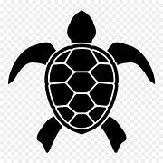

- 
- Home
- Turtle Catgories
- Hikkaduwa Turtle Hatchery
- Threats to Turtles
- Other Turtle HatcheriesKosgoda Bentota
- Purchace and Donate
Intro to our Turtle Population
The Sri Lankan turtle population is an intriguing and important part of the country's diverse biodiversity. Sri Lanka is well-known for being an important nesting place for several endangered turtle species, making it a notable global conservation hotspot. These amazing creatures use the island's pristine beaches as essential nesting grounds.
Sea turtles such as the Green Turtle, Loggerhead Turtle, Olive Ridley Turtle, and Leatherback Turtle can be found in Sri Lankan waters. These turtles travel amazing distances across wide oceans to breed in their birthplace, a phenomenon known as natal homing. The conservation of the Sri Lankan turtle population is critical not only for the survival of these amazing creatures, but also for the ecological balance of marine ecosystems. Efforts to conserve them will help to ensure the long-term sustainability and preservation of Sri Lanka's natural heritage.
Uniqueness
Turtles have been around for over 200 million years. They are known for their bony shells and slow movement. They come in various sizes, from small species like the Bog turtle to large ones like the Leatherback turtle. Turtles can live in diverse habitats, including oceans, rivers, and forests.
Distinctive features:
- Webbed feet or flippers for swimming
- Long lifespan, with some species living for decades
- Scales or scutes covering their skin
- No teeth, but a sharp beak-like mouth
Role of Sea Turtles in Ecosystems
Sea turtles are critical to the health of marine ecosystems. They help control seagrass beds as herbivores by grazing on the flora, reducing overgrowth and preserving biodiversity. Their feeding habits also help to enhance nutrient cycling and the health of seagrass environments. Furthermore, sea turtles operate as predators, preying on jellyfish and other invertebrates, so regulating their populations.
By controlling jellyfish abundance, they indirectly protect fish populations and maintain the balance of the food chain. Furthermore, their nesting activities contribute to the nutrient enrichment of beaches, supporting the growth of vegetation and providing habitat for other species. Sea turtles are integral components of marine ecosystems, and their conservation is essential for preserving the overall health and biodiversity of our oceans.
In conclucsion:
- Sea turtles help maintain healthy marine ecosystems by feeding on seagrass, which prevents overgrowth and provides habitat for other marine organisms.
- Their eggs and hatchlings provide crucial nutrients to dune vegetation, supporting coastal stability and protecting against erosion.
- Sea turtles contribute to nutrient cycling by consuming jellyfish, controlling their population and preventing ecosystem imbalances.
- Sea turtles contribute to nutrient cycling by consuming jellyfish, controlling their population and preventing ecosystem imbalances.
- Sea turtle nests provide opportunities for scavengers and organisms in the beach ecosystem, enhancing overall ecological resilience.

Life Cycle and Behaviors of turtles
Sea turtles have a fascinating and distinctive life cycle. During the nesting season, adult females come ashore to lay their eggs on sandy beaches. They dig carefully and place their eggs before covering them with sand. After an incubation period, the hatchlings emerge and make their way instinctively to the ocean, encountering several barriers and predators along the way.
Once in the water, sea turtles go through a period known as the "lost years." During this time, they disperse across the ocean, undergoing growth and development as they feed on a variety of marine organisms. As they mature, sea turtles return to coastal areas, often to the same beach where they were born, to mate and nest.
Throughout their lives, sea turtles exhibit a variety of behaviors. They eat seagrass, algae, jellyfish, and other marine invertebrates and are primarily herbivorous or omnivorous. Some animals migrate across large distances between feeding and breeding grounds. Mating rituals include wooing displays and competition among males for female attention.